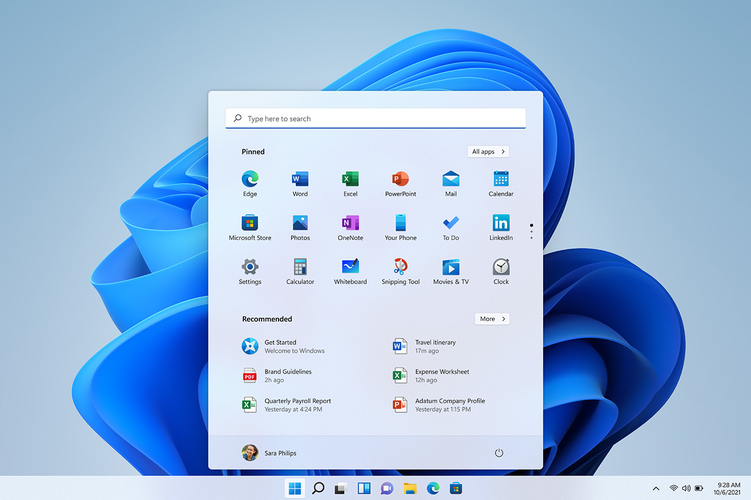
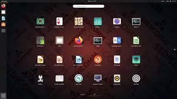
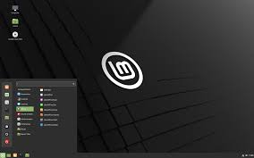
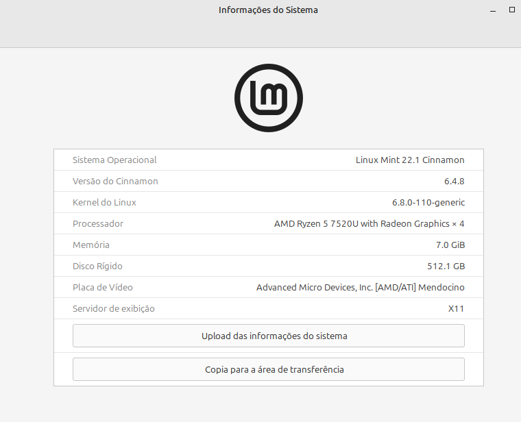

Um sistema operacional (SO) é o software fundamental que gerencia os recursos de hardware e software de um dispositivo. Ele atua como uma ponte entre
o usuário e a máquina, controlando processadores, memória e periféricos para permitir a execução de aplicativos e criar uma interface intuitiva.
Principais Funções
Gerenciamento de Hardware: Controla processadores, memória e dispositivos de entrada/saída.
Interface do Usuário: Cria a camada visual (gráfica ou por texto) que permite a interação humana com o sistema.
Execução de Programas: Aloca os recursos necessários para que os aplicativos rodem de forma simultânea e sem conflitos.
O Microsoft Windows é o principal sistema operacional para computadores pessoais do mundo. Desenvolvido pela Microsoft, ele atua como um software
básico e indispensável, gerenciando os componentes de hardware e permitindo que você interaja com a máquina de forma visual e intuitiva. Linux é um sistema operacional gratuito, de código aberto e altamente seguro, utilizado desde computadores pessoais até a maioria dos servidores de internet e supercomputadores. Em vez de um único sistema,
ele se divide em várias "distribuições" (como Ubuntu e Fedora), que combinam o núcleo do sistema (kernel) com diferentes interfaces gráficas e programas.



para saber informações sobre seu computador basta ir em informações do sistema vai mostra sobre memoria RAM, SSD e processador

A imagem acima mostrar que seu computador tem o processador Ryzen 5 tem 7 Gb de memória RAM e possui um SSD de 512 Gb e para finalizar seu
Sistema Operacional e um Linux Mint versão 22.1 com interface gráfica Cinnamon.